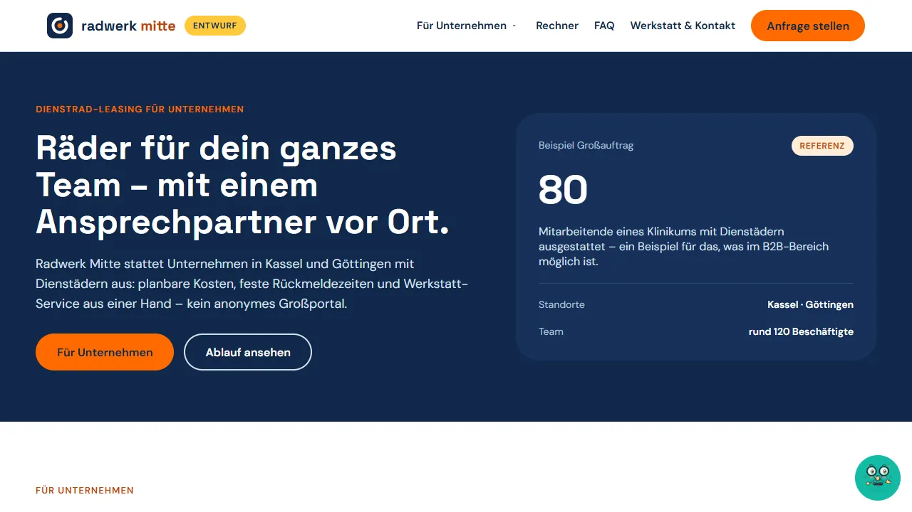
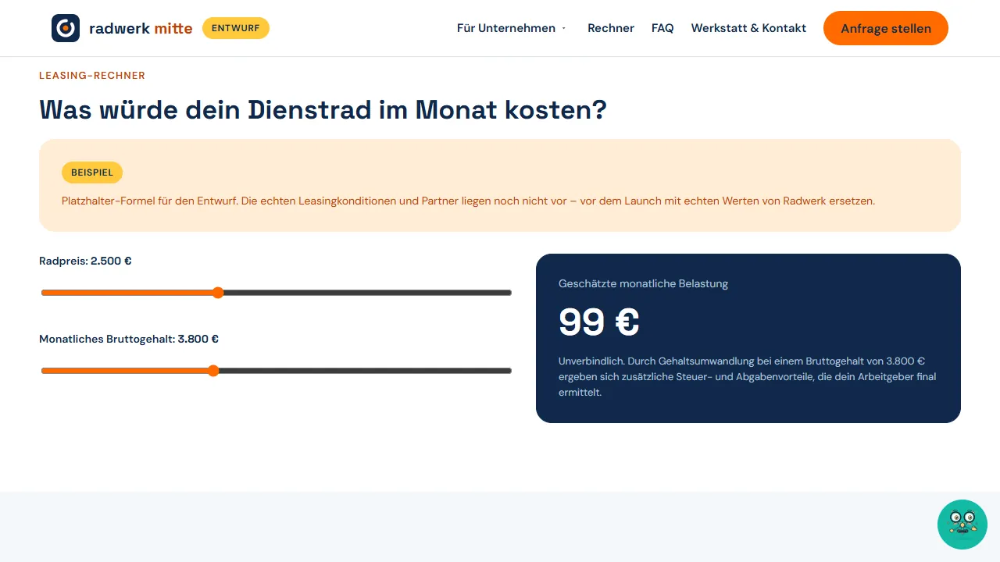
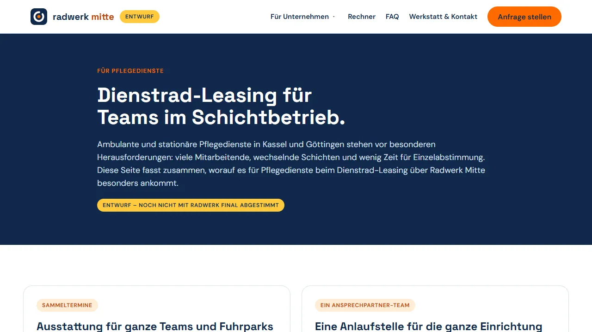
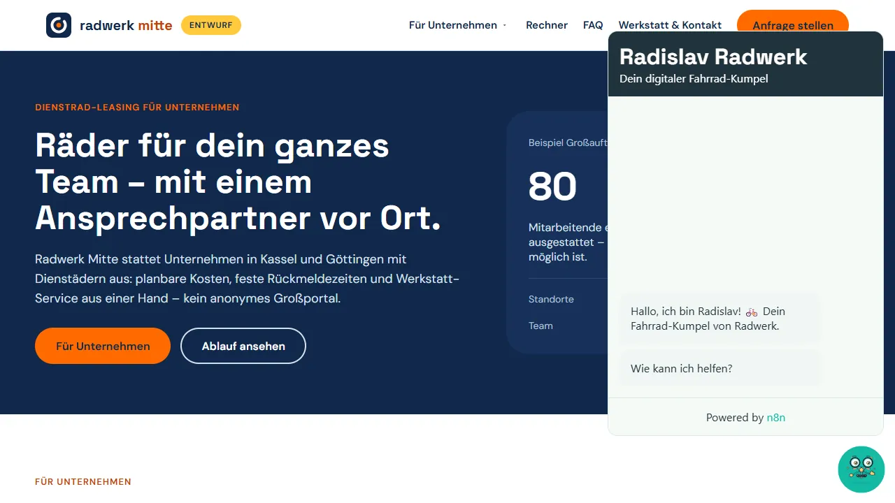

Radwerk Mitte – Website vom PRD zum Prototyp
Aus einem Kundengespräch entstehen Anforderungen, Plan, technische Spezifikation, Testplan und ein klickbarer Website-Entwurf – für einen Fahrradhändler, der mit Dienstrad-Leasing für Unternehmen wachsen will.
Meine Rolle: Anforderungen und PRD, Umsetzungs- und Testplanung, KI-gestützte Umsetzung des Prototyps mit Claude Code, Anbindung eines Chat-Assistenten über n8n.
Ausgangslage
Radwerk Mitte (Kassel und Göttingen, rund 120 Beschäftigte) will im nächsten Jahr um etwa 15 % wachsen – vor allem über Dienstrad-Leasing für Firmen, Kliniken und Kommunen. Die bisherige Website wirkt veraltet, das B2B-Angebot ist kaum sichtbar und Anfragen kommen nur per E-Mail an.
Vorgehen
- PRD aus dem Kundengespräch: Ziel, Zielgruppe, Nicht-Ziele, Annahmen und Akzeptanzkriterien – Gesagtes klar von Vermutetem getrennt
- Widersprüche zwischen mehreren PRD-Entwürfen aufgedeckt, etwa Werkstatt als Wachstumsträger trotz bekanntem Werkstatt-Engpass
- Design-Guideline an die Vorgabe „Blau und Orange bleiben“ angepasst
- Umsetzungsplan in sechs Phasen mit Freigabe-Gates, technologieneutrale Tech Spec mit Architektur-Optionen und Datenmodell
- Testplan mit zehn Testfällen entlang der Akzeptanzkriterien
Ergebnis
- Responsiver Website-Entwurf mit B2B-Bereich, Leasing-Rechner, FAQ und Anfrageformular mit Kategorien
- Unterseite für Pflegedienste als Zielgruppe im Schichtbetrieb
- Chat-Assistent „Radislav“ testweise über n8n eingebunden
- Alle Platzhalter (Konditionen, Kontaktdaten, Referenzen) sichtbar als „Beispiel“ gekennzeichnet
Einblicke

Bild vergrößernStartseite mit Fokus auf Unternehmenskunden 
Bild vergrößernLeasing-Rechner (Platzhalter-Formel, klar gekennzeichnet) 
Bild vergrößernUnterseite für Pflegedienste 
Bild vergrößernChat-Assistent „Radislav“ (n8n)


Radwerk Mitte ist ein fiktives Unternehmen aus einer Kursübung. Alle Inhalte des Entwurfs sind Beispiele.